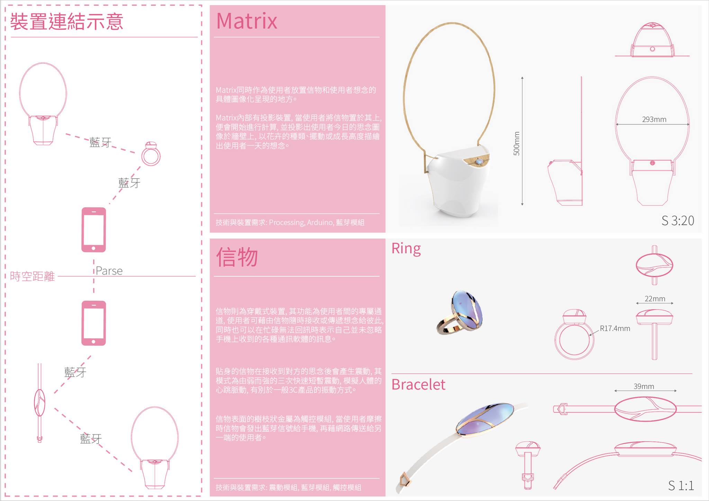

Lynda Lin (Lin Yung-Ta)
MISU
MISU
林湧達、任軒立、倪亦廷、管哲楓、尹世泓
2015 Fall Product Design and Innovation Final.
Responsibilty: Android App
當代科技讓人類縮短交通的時間,也縮短人與人之間的聯繫,卻加深了疏離感。 MISU 讓思念能被傳遞,將人與科技從冷冰冰的互動化成對生命中重要對象的溫暖回憶。 MISU 是三位一體的產品,由手環、手機以及一個投影出的植物模型構成。 透過物聯網近距離傳輸的概念,MISU 的手環將來自遠方的訊息以及關心即時地讓身體感受到,並透過植物模型將這些無形的溫暖轉化成有形的收藏。

Teaser

System Architecture